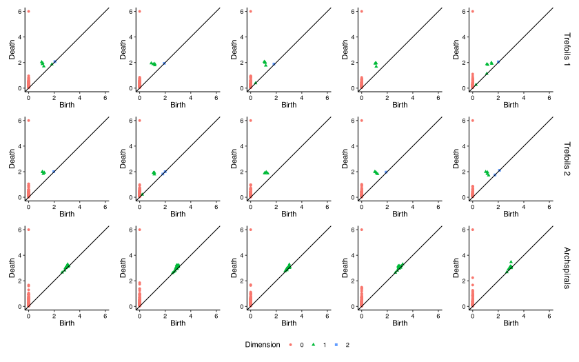
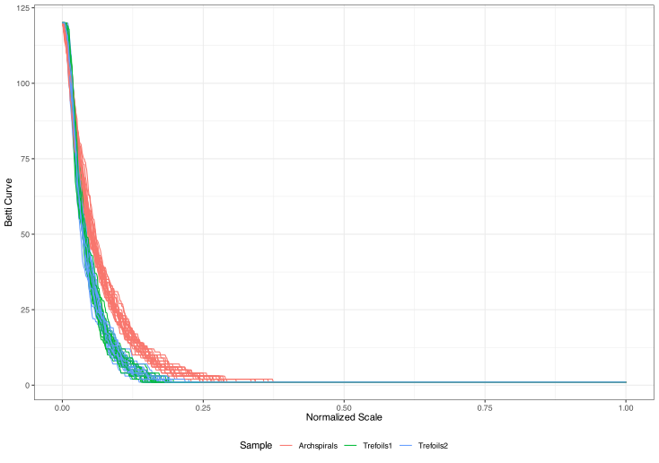
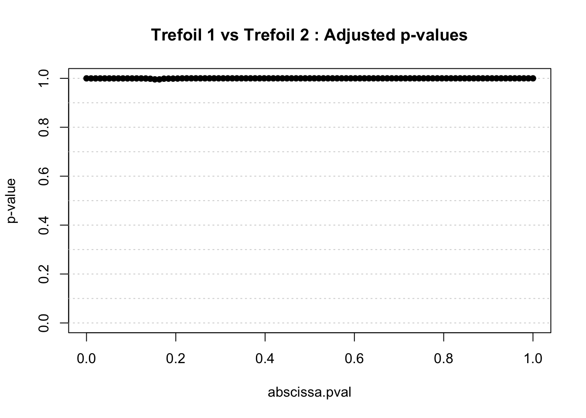

withr::with_seed(1234, {
two_sample_diagram_test(trefoils1[1:5], trefoils2[1:5])
})[1] 0.9702381Topological data analysis (TDA) is a rapidly growing field that uses techniques from algebraic topology to analyze the shape and structure of data. At its core, TDA provides tools to understand the geometric and topological features of datasets across multiple scales, with persistent homology (PH) being one of its fundamental techniques.
The documentation of the {phutil} package provides an overview of persistent homology. For now, know that the result of this procedure is a persistence diagram: a multiset (set with multiplicity) of points in the plane—usually the upper-half plane and most often the first quadrant. Persistence diagrams encode topological features of different dimensions, and a single diagram may encode features of one or all dimensions. By persistence data, we mean a data structure that encodes diagrams of all dimensions, and possibly many diagrams coming from data sets of a common type.
The goal of {inphr} is precisely to deal with comparing populations of persistence diagrams coming from data sets of different types. This is classically called the task of making inference on the basis of some collected data. Several R packages include inferential capabilities for persistence diagrams, including:
While these packages have made inference on persistence diagrams available to the R community, they only deal with inference on a single diagram using bootstrap resampling ({TDA}), or only offer inference to compare two diagrams by permutations ({TDAstats}), or only compare functional summaries of groups of persistence diagrams to answer whether they come from the same underlying distribution ({TDAkit}).
The {inphr} package aims at going one step further by offering two sets of functions for making inference:
The following sections showcase these two kinds of inference.
Two persistence diagrams \(X\) and \(Y\) are canonically compared using Wasserstein distances. These are a family of metrics determined by a \(q\)-Minkowski distance on the plane and a \(p\)-norm on the distances between pairs of points matched via some \(\varphi : X \to Y\):
\[ \left( \sum_{x \in X}{{\lVert x-\varphi(x) \rVert_q}^p} \right)^{1/p} \]
The distance \(W_p^q(X,Y)\) is defined to be the infimum of this expression over all possible matchings. See this vignette from the {phutil} package on distances for more detail, or Cohen-Steiner et al. (2010) and Bubenik, Scott, and Stanley (2023) for detailed treatments and stability results on these families of metrics.
In R, using the TDAverse, computation of the distance matrix is offered by the {phutil} package which is therefore a hard dependency of {inphr}.
Functions in {inphr} therefore accept:
phutil::as_persistence_set() representing the two samples;phutil::as_persistence_set() representing the contatenation of the two samples and a vector of two integers providing the sample sizes;phutil::bottleneck_pairwise_distances() or phutil::wasserstein_pairwise_distances() and a vector of two integers with the sample sizes.The package currently includes a function to compare two samples of persistence diagrams. The statistical method for doing that is described in Lovato et al. (2021). Subtantively, it performs inference in two steps:
Let \(F_1\) be the probability distribution that generated the first sample and \(F_2\) be the probability distribution that generated the second sample. Inference by permutations helps answering the following hypothesis test:
\[ H_0 : F_1 = F_2 \quad \mbox{v.s.} \quad H_a : F_1 \ne F_2. \]
Differently from classic parametric inference in which the null hypothesis typically assumes equality of the mean parameters or the variance parameters, it is critical that the null distribution be that the entire probability distributions be the same. This is essential because only then can we permute the labels of statistical units under the null hypothesis.
However, depending on the test statistic that is used, the test only focuses on comparing some features of the probability distributions. For instance, if one uses the distance between the Frechet means as test statistic, the test will detect differences in means between the two ditributions but will be blind to differences in variances for example. For this reason, one can use multiple test statistics to make the test sensitive to differences in several moments of the distributions. This is called non-parametric combination and it is described in Pesarin and Salmaso (2010).
The {inphr} package uses this approach by relying on the {flipr} package which is the core package of the permaverse collection of packages for permutation inference. Specifically, the dedicated function is two_sample_diagram_test() and, by default, it combines two test statistics based solely on inter-point distances that are defined in Lovato et al. (2021). One is sensitive to differences in means and the other to differences in variances. The user can actually choose one or more test statistics or even define his/her own. The result of the test is a p-value that helps in making the decision of whether to reject the null hypothesis. Optionally, one can ask the function to return the permutations that have been used (keep_permutations = TRUE) and the permutation distribution of the combined test statistic (keep_null_distribution = TRUE).
The {inphr} package includes the following three toy data sets.
Figure 1 displays the first five persistence diagrams of each sample. The reader can appreciate that the first two lines corresponding to the same trefoil geometry shows similar diagrams while the last line corresponding to a 2-arm archspiral shows a different kind of diagram.

We can therefore use inphr::two_sample_diagram_test() to compare:
trefoils1 and trefoils2 with expected output that there is not enough statistical evidence to reject the hypothesis that the two samples come from the same distribution;trefoils1 and archspirals with expected output that we can reject the hypothesis that the two samples come from the same distribution.The following code performs the test between the two trefoil samples using only the first five statistical units:
withr::with_seed(1234, {
two_sample_diagram_test(trefoils1[1:5], trefoils2[1:5])
})[1] 0.9702381As expected, the test is not able to reject the null hypothesis. By default, the function uses B = 1000 permutations, which makes the p-value resolution of \(1/1001 \approx 9.99 \times 10^{-4}\). If we compare instead trefoils1 against archspirals, again using only the first five statistical units, we get:
withr::with_seed(1234, {
two_sample_diagram_test(trefoils1[1:5], archspirals[1:5])
})[1] 0.002308242As expected, the test does detect the difference despite the small sample size.
The {inphr} package relies on the {TDAvec} package to compute functional representations of persistence diagrams. Currently, there are five truly functional representations (i.e. curves) of a given persisence diagram \(D = (b_i, d_i)_{i=1}^N\) that {TDAvec} readily provides:
the Betti curve (Chazal and Michel 2021): \[ \beta(t) = \sum_{i=1}^N \mathbb{1}_{[b_i, d_i)}(t). \]
the Euler characteristic curve (Richardson and Werman 2014): \[ \chi(t) = \sum_{k=0}^d (-1)^k \beta_k(t), \] where \(\beta_0, \beta_1, \dots, \beta_d\) are the Betti curves from the smaller persistence diagrams \(D_0, D_1, \dots, D_d\) restricted to only features of homology dimensions \(0, 1, \dots, d\) respectively.
the Normalized Life curve (Chung and Lawson 2022): \[ \mathrm{sl}(t) = \sum_{i=1}^N \frac{d_i - b_i}{L} \mathbb{1}_{[b_i, d_i)}(t), \quad \mbox{where } L = \sum_{i=1}^N (d_i - b_i). \]
the Silhouette curve (Chazal et al. 2014): \[ \phi(t) = \frac{\sum_{i=1}^N (d_i - b_i) \Lambda_i(t)}{L}, \quad \mbox{where } \Lambda_i(t) = \begin{cases} t - b_i & \mbox{if } t \in \left[ b_i, \frac{b_i + d_i}{2} \right] \\ d_i - t & \mbox{if } t \in \left( \frac{b_i + d_i}{2}, d_i \right] \\ 0 & \mbox{otherwise.} \end{cases} \]
the Entropy Summary curve (Atienza, González-Dı́az, and Soriano-Trigueros 2020): \[ S(t) = \sum_{i=1}^N \frac{d_i - b_i}{L} \log_2 \frac{d_i - b_i}{L} \mathbb{1}_{[b_i, d_i]}(t). \]
Figure 2 displays, as an example, the Betti curve representations of the 24 diagrams in each of the three toy data sets.

Figure 2 shows a clear difference between trefoil and archspiral geometry but overlapped curves between the two trefoil samples as expected.
The {inphr} package relies on the {fdatest} package which is also part of the permaverse to handle hypothesis testing on functional representations of persistence homology. Specifically, the {fdatest} package implements a method called interval-wise testing described in Pini and Vantini (2017) which effectively performs domain selection by identifying the portion(s) of the domain of definition of the functional representation where there are statistically significant differences between samples. In the future, the package will also integrate other such domain selection methods described in Abramowicz et al. (2023).
When using functional representations, we must choose the homology dimension which we want to work on. In {inphr}, we perform inference in functional spaces with the two_sample_functional_test(). For example, the following code uses the Betti curves for dimension \(0\) to compare the two trefoil samples:
out1 <- two_sample_functional_test(
trefoils1, trefoils2,
dimension = 0,
representation = "betti"
)Similarly, the following code uses the Betti curves for dimension \(0\) to compare the first trefoil sample and the archspiral sample:
out2 <- two_sample_functional_test(
trefoils1, archspirals,
dimension = 0,
representation = "betti"
)The output of the two_sample_functional_test() function is a list with entries:
xfd: a numeric matrix of shape \(N_1 \times (P - 1)\) storing the chosen functional representation of the persistence diagrams in the 1st sample, where \(N_1\) is the sample size and \(P\) is the number of points on which the curves have been evaluated;yfd: a numeric matrix of shape \(N_2 \times (P - 1)\) storing the chosen functional representation of the persistence diagrams in the 2st sample, where \(N_2\) is the sample size and \(P\) is the number of points on which the curves have been evaluated;scale_seq: a numeric vector of shape \(P\) storing the grid on which the curves have been evaluated;iwt: an object of class ‘ITP2’ for which {fdatest} has dedicated S3 implementations of methods such as plot().Hence we can display the results of the inferential procedures with the following code:
plot(out1$iwt, main = "Trefoil 1 vs Trefoil 2")
plot(out2$iwt, main = "Trefoil vs 2-arm Archspiral")



Figure 3 displays the results of the IWT procedure. We can see the portions where statistically significant differences have been detected highlighted by grey areas. The left column shows the curves of the two samples in two different colors while the right column shows the adjusted p-value functions which provide strong control of the familywise error rate.